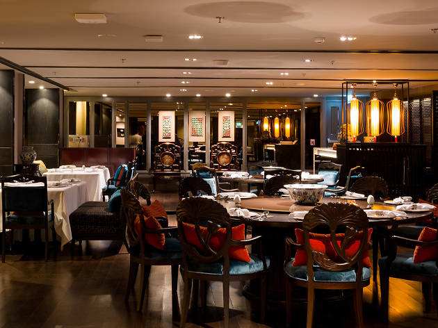

Some Thing About Us
Welcome to Asian Restaurant
Asian culinary delights are always exotic not only with the customers in the country but also the foreign guests love the beauty of traditional. Asian dishes always feature regional flavors. Asian restaurants in Vancouver are varied and rich, but finding a place "right" is not easy.
Asian restaurant in Vancouver
Asian Restaurant - A place to store the value and beauty of Asian cuisine. We are known as a distinctive Asian cuisine restaurant in Vancouver.
From the cuisine to the architecture is a traditional, rustic and simple. Our cuisine is diverse, rich in specialties, seafood, traditional folk dishes. Each dish has its own distinctive "Asian" flavor.
Moreover, the Asian restaurant also inherits the traditional values of Asian cuisine in the skillful use of marinated spices, arouse the original flavor of the dish.
Understanding the essence of Aian cuisine is none other than Asian. Therefore, the chef of the restaurant is the chef Korean talent, with deep knowledge of Vietnamese cuisine, make the dishes are strong Asian identity.
Coming to Asian restaurants, you will be immersed in the space filled with the essence of culinary culture of three regions with Pho, Mochi, rustic simplicity with Shrimp Spring Rolls, back to Asia with banana bread and many other folk specialties.
Going to the sea with specialties and seafood of traditional Asian restaurant. From the method of preparation to the way of food arrangement, contains the rustic simplicity, strong identity of the homeland.
The essence of Asian culinary space
Especially attractive to Asian restaurant is the architecture of Asian culture, cozy, interwoven between the modern and traditional, creating unique and breaking the way.
It's great to be able to immerse yourself in the art-filled atmosphere and enjoy Asian culinary excellence at Asian Restaurant on a cool weekend. Come and feel!